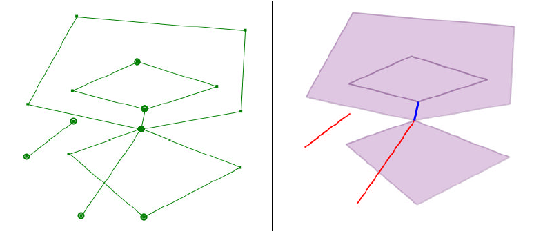

Clean
Questo geoprocesso genera un layer di poligoni a partire da un layer di linee. I poligoni vengono creati in corrispondenza delle aree (chiuse) che risultano interamente contornate da linee del layer di input.
Opzionalmente, tutte le linee che non racchiudono alcuna area possono essere salvate in due layer ausiliari ("dangling lines" e "cutted lines").

Opzionalmente, è possibile anche specificare una dangling line tolerance (tolleranza linee pendenti) per escludere tutti i tratti lineari pendenti la cui lunghezza eccede il valore di tolleranza assegnato.